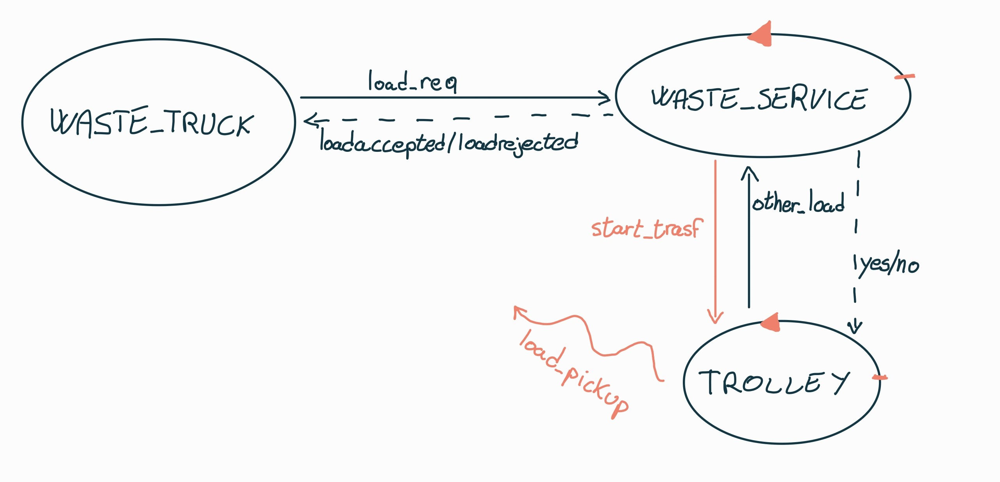
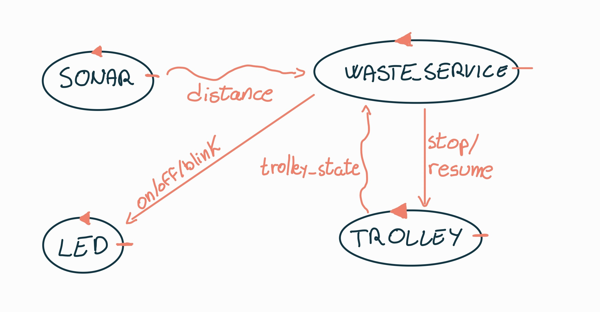
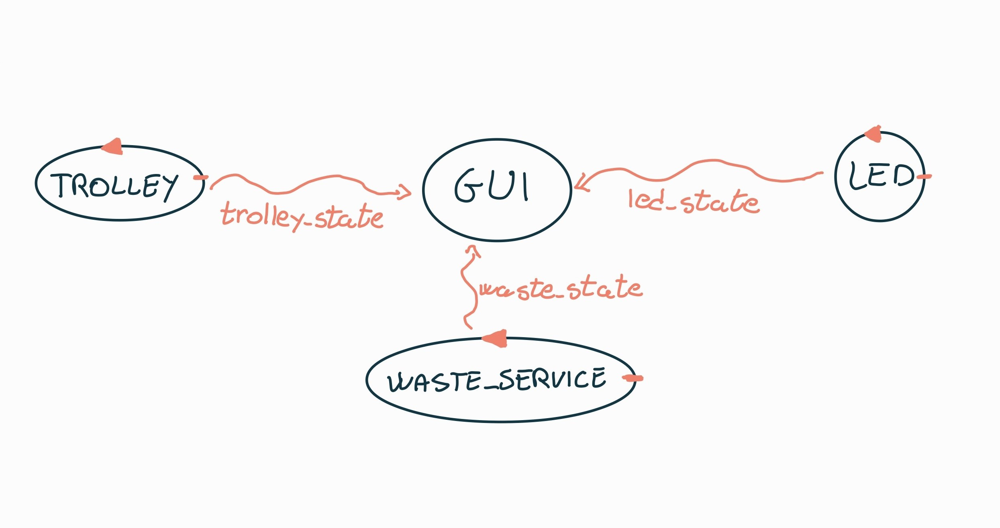
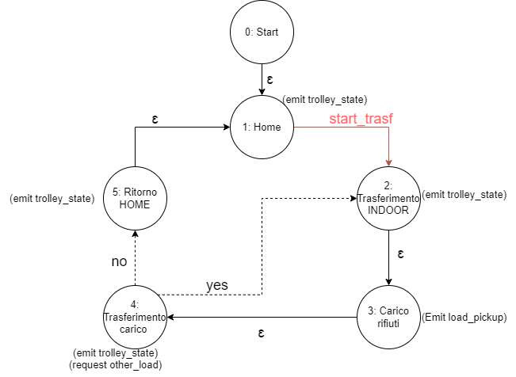
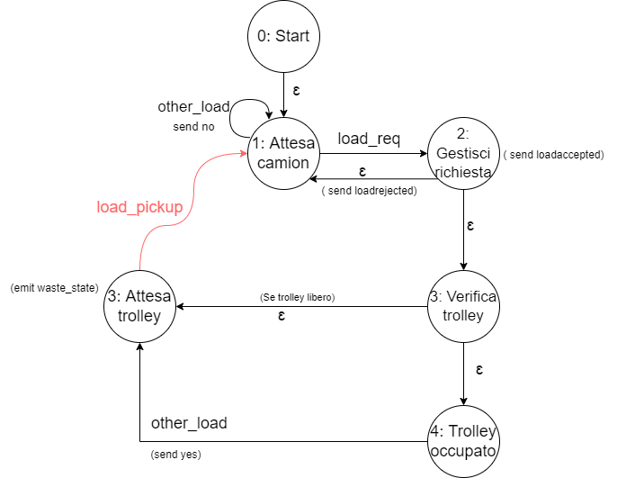

Introduction
Progetto finale del corso di studio Ingegneria dei sistemi software M, Laurea Magistrale Università di Bologna. (SPRINT 1 versione 0)
Requirements
Una compagnia intende costruire un WasteService per la raccolta differenziata.
- ZONA_SERVIZIO: una zona di servizio (rettangolare, pianeggiante) che comprende:
- una porta INDOOR , per l'immissione di materiale di scarto
- un contenitore PlasticBox , dedicato alla conservazione di oggetti in plastica, fino a MAXPB kg di materiale. (CAPIENZA_PLASTICA)
- un contenitore GlassBox , dedicato alla conservazione di oggetti in vetro, fino a MAXGB kg di materiale. (CAPIENZA_VETRO)

- ROBOT: un robot DDR che funge da carrello di trasporto (Trolley) , che è inizialmente situato nella sua posizione HOME (POSIZIONE_INIZIALE) .
Il Trolley ha la forma di un quadrato di lunghezza laterale RD.
COMPORTAMENTO_ROBOT: Il Trolley viene utilizzato per svolgere un'azione di deposito che consiste nelle seguenti fasi:
- raccogliere un carico di rifiuti da un camion dei rifiuti situato all'INDOOR
- passare dall'INDOOR all'apposito contenitore dei rifiuti
- depositare il carico di scarto nel contenitore
- GUI: un Service-manager (un essere umano) che supervisiona lo stato dell'area di servizio utilizzando una WasteServiceStatusGUI .
- SONAR_LED: un Sonar e un Led collegati a un RaspberryPi. Il Led viene utilizzato come dispositivo di segnalazione , secondo il seguente schema (COMPORTAMENTO_LED):
- il Led è spento quando il Trolley è a HOME
- il Led lampeggia mentre il Trolley è in movimento
- il Led è acceso quando il Trolley è fermo. (Stopped) COMPORTAMENTO_SONAR: Il Sonar viene utilizzato come 'dispositivo di allarme': quando misura una distanza inferiore ad un valore prefissato DLIMT ,
il carrello di trasporto deve essere fermato. Verrà ripreso quando il Sonar rileverà una distanza maggiore di DLIMT .
- OBIETTIVO: L'obiettivo principale del software WasteService è quello di consentire a un camion dei rifiuti di depositare il proprio carico di TruckLoad kg di plastica o vetro nell'apposito contenitore.
Il comportamento può essere descritta come segue:
- RICHIESTA_CAMION: Il camion si avvicina all'INDOOR e invia (tramite un dispositivo smart) la richiesta di immagazzinare il carico, specificando la tipologia del materiale (plastica o vetro) e il suo TruckLoad .
- WasteService invia la risposta loadaccept se il contenuto finale del contenitore appropriato non supererà il valore massimo consentito ( MAXPB o MAXGB )(CARICO_ACCETTATO). In caso contrario, invia la risposta loadrejecetd e il camion dei rifiuti lascia l' area INDOOR (CARICO_RIFIUTATO).
- TRASFERIMENTO_CARICO: Quando il carico viene accettato, il Trolley raggiunge l' INDOOR , preleva il materiale, va all'apposito contenitore e deposita il materiale.
Durante questa attività il WasteService fa lampeggiare il Led.
- FINE_TRASFERIMENTO: Quando l'azione di deposito è terminata, il robot esegue un altro comando di deposito (se presente) o ritorna alla sua HOME .
- GUI: WasteService deve creare una WasteServiceStatusGUI che mostri al Service-manager :
- lo stato attuale del carrello di trasporto e la sua posizione nella stanza
- il peso attuale del materiale stoccato nei due contenitori per rifiuti
- lo stato attuale del Led
Requirement analysis
PUNTI APERTI:
- Dimensioni e coordinate PlasticBox, GlassBox, INDOOR e HOME, inoltre la piantina della stanza è nota a priori?
- Waste Truck attende fino a che il carico non é stato prelevato (necessitá di comunicazione tra Trolley e Waste Truck)?
- Plastic e Glass Box possono essere "svuotati" oppure il loro carico puó solo aumentare?
- I valori MAXGB, MAXPB, RD e DLIMIT sono definiti a priori e da chi vengono decisi?
- TruckLoad e il tipo di carico come viene definito e cosa si intende per dispositivo smart?
- Come va rappresentata la posizione corrente del trolley? (Coordinate, Stato, Disegno della stanza, etc)
A questo punto é necessario effettuare un piccolo riassunto per evidenziare ad alto livello le entitá e funzionalitá presenti nel sistema:
ENTITÁ
- WASTE_SERVICE
- TROLLEY (sinonimo Robot DDR)
- WASTE_TRUCK (sinonimo camion dei rifiuti)
- WasteServiceStatusGui
- LED
- SONAR
REQUISITI FUNZIONALI
- Richiesta ed eventuale Trasferimento del carico (RF1):
Il WASTE_TRUCK invia una richiesta al WASTE_SERVICE con le caratteristiche del carico (tipo e peso), successivamente il WASTE_SERVICE, in base allo stato attuale (capacitá residua disponibile) accetta (loadaccept) o meno (loadrejecetd) il carico.
Se il carico viene accettato, il WASTE_SERVICE comunica ciò al TROLLEY che si sposta verso l'area INDOOR per prelevare il carico, dopo aver effettuato il prelievo lo notificherá alle varie enitá [DOMANDA]; poi effettua il trasferimento ed infine richiede al WASTE_SERVICE se é presente un nuovo carico:
- Risposta positiva: il TROLLEY si muove verso l'area INDOOR
- Risposta negativa: il TROLLEY torna alla HOME
- Sonar e Led (RF2):
in base alla distanza rilevata dal SONAR, il TROLLEY muta il suo comportamento:
- Distanza minore di DLIMIT: il TROLLEY si ferma.
- Distanza superiore a DLIMIT: il TROLLEY si muove.
- Acceso: TROLLEY fermo a causa del SONAR (stopped).
- Spento: TROLLEY in HOME.
- Lampeggiante: TROLLEY in azione.
- GUI (RF3):
é presente una gui che mostra:
- Stato corrente del TROLLEY
- Peso corrente dei due box
- Stato del LED
REQUISITI NON FUNZIONALI
- Posizione iniziale: il trolley parte dalla posizione HOME.
- Dimensione TROLLEY: il trolley ha lunghezza di lato RD.
- Proattività: il trolley deve muoversi in modo autonomo fino al completamento del lavoro.
- Reattività: in caso di allarmi, in particolare, quando il sonar rileva una distanza minore di DLIMIT, il TROLLEY sospenda il lavoro.
- Raspberry: il LED ed il SONAR sono componenti di un RaspberryPI
OSSERVAZIONE
RaspberryPi, Robot e Gui possono essere entiá che operano su nodi differenti, quindi é necessario tenere conto che possono essere distribuiti e perció tenere in conto che devono comunicare tra loro.Problem analysis
ARCHITETTURA LOGICA
Per ogni requisito funzionale viene riportata di segiuto l'architettura logica per mostrare le interazioni tra le varie entitá:Richiesta ed eventuale Trasferimento del carico (RF1):

Evidenziamo le motivazione per le quali abbiamo scelto tali tipi di messaggio:
- La comunicazione da parte del WASTE_SERVICE al TROLLEY di eseguire un trasferimento (start_trasf) avviene attraverso un dispatch, in quanto riteniamo non ci sia bisogno di una risposta da parte del TROLLEY
- Viceversa la richiesta della presenza di un nuovo carico (other_load) é realizzata mediante uno schema request-response visto che il TROLLEY deve sapere, dopo aver terminato un trasferimento, l'azione da eseguire successivamente
- Come ultima osservazione, abbiamo deciso di rappresentare mediante un evento (load_pickup) il ritiro del carico, questo per non creare un legame tra il WASTE_TRUCK corrente e il TROLLEY.
In tal modo le entitá interessate di questo evento devono solo registrarsi senza che il TROLLEY le debba conoscere
Sonar e Led (RF2):

Per completezza riportiamo anche una prima rappresentazione delle interazioni che interessano LED e SONAR, anche se queste entitá verranno trattate piú in dettaglio negli Sprint successivi. Al momento SONAR e TROLLEY comunicano tramite eventi (distance e trolley_state) per evitare accoppiamenti, mentre il WASTE_SERVICE invia i comandi tramite dispatch come indicato dai requisiti.
GUI (RF3):

Abbiamo deciso di rappresentare queste interazioni tramite degli eventi in modo tale che le varie conponenti non debbano conoscere l'entitá GUI per comunicare con essa.
MODELLO ESEGUIBILE
Codice: /src/Sprint1.qak- FSM TROLLEY:

- FSM WASTE_SERVICE:

In questo primo Sprint ci siamo concentratti prettamente sul RF1, cercando di rappresentare formalmente mediante il linguaggio QAK
il comportamento del TROLLEY e del WASTE_SERVICE senza considerare le componenti presenti nel RaspberryPi (Sonar e Led) che verranno poi trattate negli Sprint successivi.
Inoltre il RF3 é stato affrontato parzialmente per quanto concerne le parti di stato del TROLLEY e stato dei BOX introducendo un componente GUI mock.
CRITICITÁ EMERSE
- L'evento load_pickup in presenza di più richieste in successione presenta un problema. Infatti abbiamo notato che in fase di test tale evento
non viene rilevato dai WASTE_TRUCK in quanto fermi in uno stato in cui non sono in attesa di alcun evento. - Chi é a conoscenza delle coordinate dell' INDOOR, del PLATIC BOX, del GLASS BOX e di HOME?
PIANO DI LAVORO
Dopo una prima analisi del problema abbiamo delineato una prima idea di ipostazione del lavoro:- SPRINT 1: Definizione del comportamento di WASTE_SERVICE e TROLLEY
- SPRINT 2: Introduzione delle componenti presenti sul RaspberryPi (LED e SONAR)
- SPRINT 3: Introduzione della WasteServiceStatusGui
- SPRINT 4: Introduzione del Virtual Robot
- SPRINT 5: Introduzione di LED e SONAR fisico e distribuzione del sistema in piú contesti
Test plans
Codice: /src/Sprint1Test.qak
Per verificare il corretto comportamento di WASTE_SERVICE e TROLLEY é stato realizzato un test plan che controlli il loro funzionamento.
In particolare, sono stati introdotti dei QActor per simulare WASTE_TRUCK che arrivano sequenzialmente o contemporaneamente, le situazioni riprodotte sono le seguenti:
Per verificare il corretto comportamento di WASTE_SERVICE e TROLLEY é stato realizzato un test plan che controlli il loro funzionamento.
In particolare, sono stati introdotti dei QActor per simulare WASTE_TRUCK che arrivano sequenzialmente o contemporaneamente, le situazioni riprodotte sono le seguenti:
- Camion 1: carico di GLASS -> ACCETTATO
- Camion 2: carico di GLASS -> RIFIUTATO
- Camion 3: carico di PLASTIC -> ACCETTATO ma messo in attesa perché il TROLLEY é occupato
- Caimion 4 e 5: arrivano contemporaneamente -> il primo viene ACCETTATO ma messo in attesa, il secondo viene RIFIUTATO
Project
Testing
Deployment
Maintenance
Davide Filoni email: davide.filoni2@studio.unibo.it
Fabio Scagliarini : fabio.scagliarini@studio.unibo.it
Filippo Comastri : filippo.comastri2@studio.unibo.it
Link git
Fabio Scagliarini : fabio.scagliarini@studio.unibo.it
Filippo Comastri : filippo.comastri2@studio.unibo.it
Link git